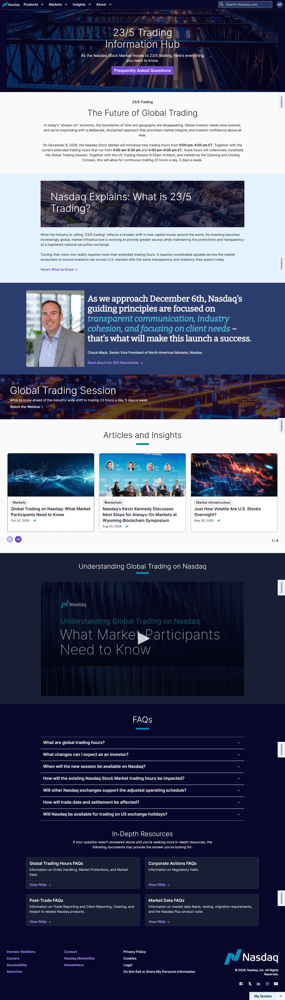

Nasdaq · Information architecture · 2025–2026
I designed, prototyped and built out 60% of the redesigned sitemap and navigation, which launched in Q3 2026, while leading a four-person content team.
Role
UX Content Designer, IA owner for 60% of the site
Team
Led 4 Web Production Specialists; partnered with PMs, developers, UX/UI designers and product marketers
Timeline
June 2025 – Q3 2026 launch
Tools
Figma, Drupal
Nasdaq.com had grown into a sprawl of market data, news and company pages. Retail investors, professionals and listed companies all landed in the same tangled navigation.
Content was wildly inconsistent and didn't follow a clear hierarchy, so similar pages were structured, labeled and nested differently.
Goal: A structure that matched how each audience looks for information, on a CMS teams could update quickly.
01
Mapped the existing sitemap against real traffic and drop-off.
02
12+ user testing sessions. The surprise: people disliked dark mode, which changed our direction.
03
Restructured sitemap and navigation around user tasks.
04
Figma prototypes with real copy and interactions built in.
05
Reusable Drupal content models to keep it maintainable.
Before designing a single new page, I tested every existing page against two rules. About 15% failed and were retired or folded into stronger, higher-level pages.
Rule 1 · Traffic
Fewer than 200 page views in 90 days
Rule 2 · Value
Low lead generation
Result
Less to rebuild, and a cleaner hierarchy to build on
The 23/5 Trading Information Hub shows the new structure at work. It moves readers from the headline announcement down through context, explanation, expert voices and deep resources, and each layer can grow or shift as the story changes. Scroll the page to see it.

The Content Hierarchy, Top to Bottom
Why: Pages under 200 views in 90 days, or with low lead generation, could fold into higher-level pages and shorten the rebuild.
Tradeoff: Retiring pages teams owned meant making the case with data.
Why: Cards that retrofit existing content kept the new, cleaner look without rewriting everything.
Tradeoff: More upfront component design and development.
Why: In testing, people were less inclined to like the dark mode screens.
Tradeoff: Rework on designs already in progress.
25%
fewer stakeholder review cycles
40%
faster content updates in Drupal
Q3 2026
new experience launched
Next case study
Simplifying UPS.com for Customers in 220+ Markets
Some details are simplified for confidentiality. Happy to walk through more in conversation.